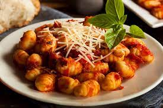

Receta de ñoquis

Ingredientes:
- 1 kg. papas
- 300/350 grs. de harina
- Sal
- 1 huevo
- Nuez moscada
- Pimienta
Elaboracion:
- Colocar a hervir las papas sin pelar en una olla y cocinar hasta que estén blandas
- Una vez cocidas, dejar enfriar y, luego, pelarlas
- Pisar las papas hasta formar un puré homogéneo y agregarles sal, pimienta y el toque de nuez moscada
- Agregar a la preparación los huevos batidos y la harina. Unir con las manos para poder pasar un "bollo" a la mesada que sea posible de amasar.
- Formar tiras de masa y cortar en trocitos de no más de 3cm. Si tenés ganas, podés utilizar la herramienta propia de los ñoquis o, simplemente, un tenedor para darle su clásica presentación troquelada.
- Cuando los cubitos ya estén armados, colocarlos en una olla con agua hirviendo con un puñado de sal gruesa.
- En un principio, la pasta se va a hundir en el agua, pero al minuto subirán hacia la superficie y ese será el momento clave para colarlos y agregarles la salsa que más te guste.